This vignette demonstrates the functionality of the roomba package on Twitter API data.
For more information on downloading Twitter data, please check out the httr package.
The output req will be a nested list; you can save it using write_rda() from the tidyverse package.
library(httr)
library(jsonlite)
oauth_endpoints("twitter")
# edit the keys with own information
myapp <- oauth_app("twitter",
key = "EOy06ORJM56b8mk1yoUo6bnjG",
secret = "8z4PMPIJrXKYE9JrALjI4TnzDJksB8xRphHj0L5JpWpSiEtbs6"
)
twitter_token <- oauth1.0_token(oauth_endpoints("twitter"), myapp)
req <- GET("https://api.twitter.com/1.1/statuses/home_timeline.json",
config(token = twitter_token))
stop_for_status(req)
content(req)We provide actual Twitter data as an example, which can be loaded using data(twitter_data).
Using the roomba() function will gather information based on your variables of interest (in this case, followers_count and friends_count). From there, you can use other dplyr functions on your data.
twitter_data <- twitter_data
twitter_data %>% roomba(cols = c("followers_count", "friends_count")) %>%
ggplot(aes(x = followers_count, y = friends_count)) +
geom_point() +
theme_minimal()